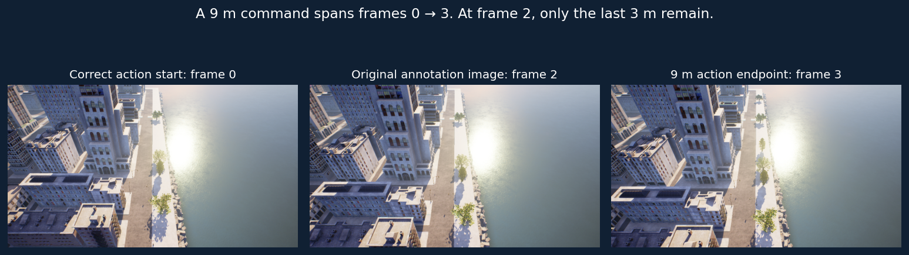

Decoder: the old setting erased up/down. The new explicit profile can represent every evaluated action, with round-trip checks. Up/down predictions now reach the evaluator.
Data alignment: compressed forward commands referenced the last raw frame inside a movement block. We reconstructed and verified their start frames without changing the old dataset.

110 routes audited: 3,634 movement labels pass; eight mismatches remain excluded. The separate corrected macro manifest contains 1,639 examples, keeping 88 train/22 validation routes.
Same72 observations and route instructions, 12 examples per direction, unchanged checkpoints. Main metric: next-direction agreement. This is not flight success. Our adapters only output3m forward, so exact macro distance is reported separately for OpenFly.
Always-forward reference:12/72. These official TRAIN routes are held out from our adapters; the released model may have seen them. No statistically reliable winner or published-benchmark reproduction is claimed.
9,728 training routes use initial-climb (-1) and post-STOP-descent (-2) tags. Our pilot excluded those routes. The new schema parser preserves those phases and uses the recorded navigation STOP as the navigation goal.
8,160 of those routes place STOP more than20m from the final recorded position. Treating that later position as the navigation goal would conflict with the STOP label.
A six-case unquantized BF16 reference produced the same decoded actions as NF4 on all six. Quantization alone does not explain those failures; full-panel equivalence remains untested.
Gray-image tests remove visual information on the same24 balanced cases. The12 macro pairs were specifically selected for a demonstrated alignment mismatch, so they diagnose that issue rather than estimate overall performance.